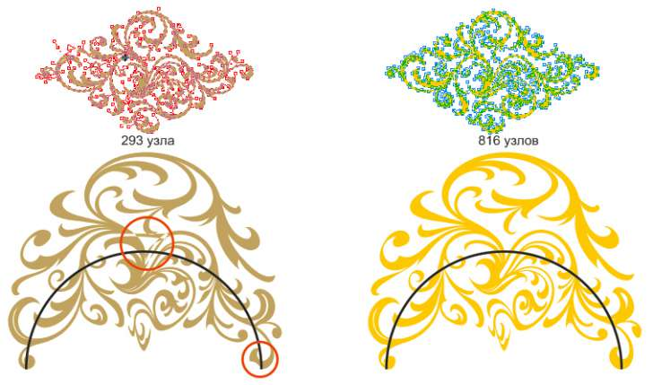

есть ли в Corel аналог фильтра Warp из илла?
DiHand / 06.10.2012, 21:19/00:41
Форум:
собсно вопрос в том как погнуть узоры
1 енвелоп как то вообще криво работает в таком случае, даже на примерах секторов в 90градусов
2 кисть тоже не помогает - изор даже если состыкуется то не гнется по контуру,
3 бленд - не поворачивает узор например о окружности
4 1 просто деформатор в илле все это делает элементарно, но сама программа настолько криво написана что кроме этой функиции в кореле мне работать и приятнее намного и быстрее,
5 хелп ми плиз))
DiHand, что конкретно с энвелопом не так?
DiHand, действительно, Оболочкой делать сильные изгибы трудно.
Но вот посредством кисти можно. Правда, надо понимать, что деформации будут более гибки, если фигура содержит больше узлов.
На рисунке ниже показана деформация узора по дуге: слева красными кружками обозначены дефекты деформации; справа — результат такой же деформации по дуге этой же фигуры после увеличения количества узлов.

Также в случае, показанном справа, были исправлены свойства узлов: на местах, где кривая резко изменяет направление, узлы угловые, а в местах плавных изгибов — сглаженные.
спасибо, поковырял и вроде разобрался, но конечно не сильно удобно то что нельзя регулировать плотность кисти и ее поворот.. приходится переделывать кисть, плюс она почему то постоянно обновляется с скачет вверх списком, но эт я надеюсь уже исправят в след версиях